Chris La Rose
Glimmer and Gloom is a game played on a finite undirected simple graph 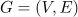, where each vertex 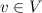 is labeled by a function , with 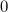 representing a “dark” vertex and 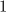 representing a “light” vertex. A player can perform a sequence of click operations, where clicking on any vertex , toggles the label of as well as the labels of all adjacent vertices. The goal is to find a sequence of click operations that produces a labeling 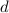 such that either all vertices receive a dark label ( ) or all vertices receive a light label ( 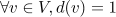).
Let be the matrix such that
That is, 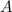 is the adjacency matrix of the graph plus the identity matrix . The column vectors of this matrix represent the effect on the labels of the vertices when the corresponding vertex is clicked.
Let be an indicator vector for a set of vertices 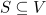, where if and 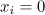 otherwise. Clicking on each of the vertices in on the graph with initial labeling results in a new labeling given by:

The equation 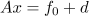 is a system of linear equations over . To determine whether a solution exists, we observe that is consistent if and only if 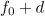 belongs to the image (column space) of .
The matrix represents the adjacency structure of the graph , and its rank determines the number of independent equations in the system. If has full rank (i.e., 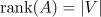), then for each , there exists a unique solution . If does not have full rank, there may be multiple solutions or none, depending on whether lies in the image of .
Since each click is an involution (clicking a vertex twice has no effect), the system is guaranteed to have a solution whenever is in the image of .
Given the system , we seek a minimal solution, which corresponds to the smallest set such that clicking all vertices in yields the desired final labeling . Minimizing the size of is equivalent to minimizing the number of non-zero entries in the solution vector . This problem can be framed as finding the solution to the system with the minimum Hamming weight of .
Consider the following algorithm to find a minimal solution:
We have demonstrated that the game of Glimmer and Gloom can be reduced to solving a system of linear modular congruences over . The adjacency matrix of the graph plus the identity matrix determines the structure of this system, where each solution corresponds to a set of vertex clicks that toggles the labels of the vertices to produce the desired labeling.
The existence of a solution depends on whether the target labeling, , lies in the image of the matrix . When a solution exists, finding a minimal set of clicks, equivalent to minimizing the Hamming weight of the solution vector, can be efficiently computed by exploring the null space of and selecting the solution with the fewest non-zero entries.
This approach provides a clear framework for solving the game, making it possible to determine not only whether a solution exists but also how to achieve it with the minimal number of moves.
This document was generated using the LaTeX2HTML translator Version 2024 (Released January 1, 2024)
The command line arguments were:
latex2html –tmp=/tmp -image_type png -split 0 main.tex
The translation was initiated on 2024-09-19